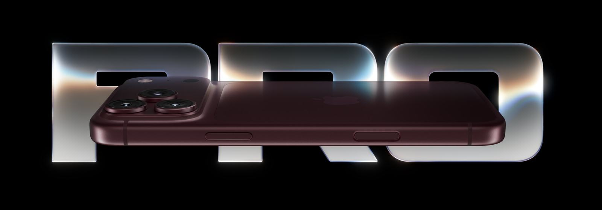
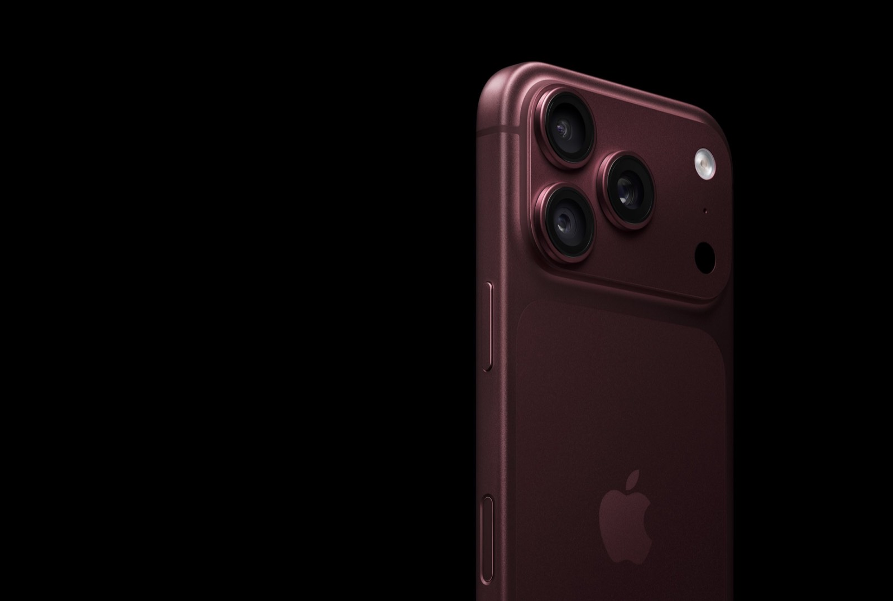
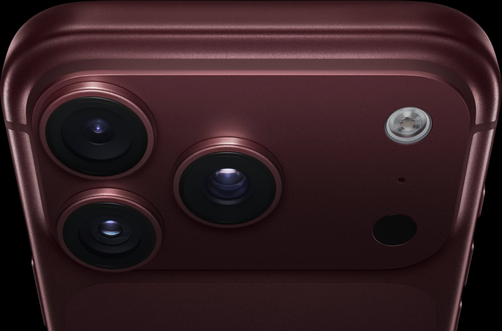
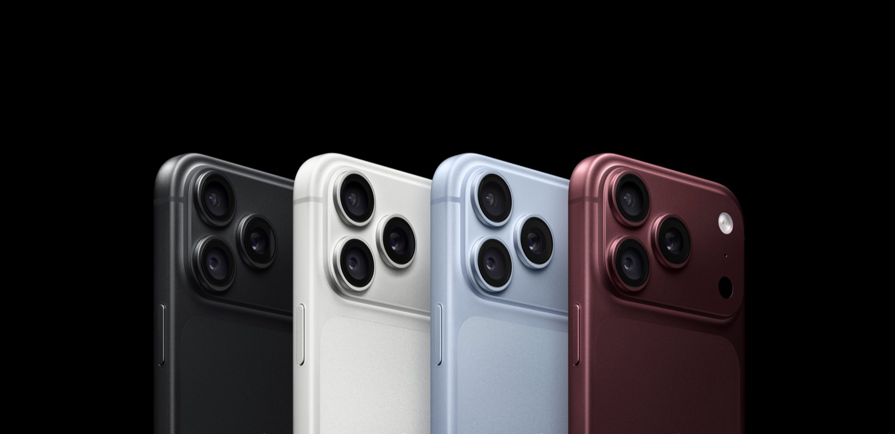

Lo tenemos en las cuatro terminaciones, en Pro y Pro Max. Escribinos y te pasamos precio, capacidades y colores disponibles hoy. También tomamos tu equipo actual como parte de pago.
Te respondemos con precio y disponibilidad real, sin vueltas.
Colores. Cuatro terminaciones para elegir. Este es el iPhone 18 Pro en color borgoña.
Dos tamaños. El Pro Max tiene 6,9 pulgadas y el Pro, 6,3. Los dos con pantalla Super Retina XDR y ProMotion a 120 Hz.
Nueva cámara principal. La de 48 MP tiene apertura variable de ƒ/1.48 a ƒ/4: se ajusta sola para que entre más luz de noche o para que todo el plano quede enfocado.
Zoom 8x. El teleobjetivo también es de 48 MP y llega a 8x con calidad óptica, 16x de rango total. En la cancha o en un recital el sujeto sale limpio, no como un recorte pixelado.
Chip A20 Pro. Primer chip de 2 nanómetros en un teléfono, enfriado por evaporación. Mantiene el ritmo en vez de bajar la velocidad a los diez minutos: hasta 40% más rendimiento sostenido que el 17 Pro.
Dynamic Island rediseñada. Muestra hasta tres actividades en vivo juntas: el partido, el viaje y el tema que está sonando, sin salir de lo que estés haciendo.
Durabilidad. Estructura unibody de aluminio y Ceramic Shield 2 al frente, con el triple de resistencia a los rayones que el 16 Pro.
Control de la Cámara. Un botón dedicado: sacás la foto, grabás, cambiás el zoom y ajustás la exposición deslizando el dedo, sin tocar la pantalla.
Botón de Acción. Un atajo a lo que más usás: silencio, linterna, grabadora, traductor o la cámara. Lo dejás configurado una vez y listo.

Es el cambio más grande del año. La principal de 48 MP tiene apertura variable de ƒ/1.48 a ƒ/4: entra más luz de noche y, cerrada, todo el plano queda enfocado. Antes eso se hacía con software; ahora lo hace el lente.

Elegí el iPhone que tenés hoy y te mostramos, con los números de Apple, cuánto ganás pasando al 18 Pro. Si el salto es chico, te lo decimos: a veces conviene más un 17 o un 16 de los que ya tenemos acá.
¿Tenés un iPhone 13 o más viejo? Apple no publica esa comparación, pero el salto es todavía más grande. Escribinos y lo vemos con tu equipo →

Imágenes de producto: Apple Inc.
Leé el análisis completo en el blog →